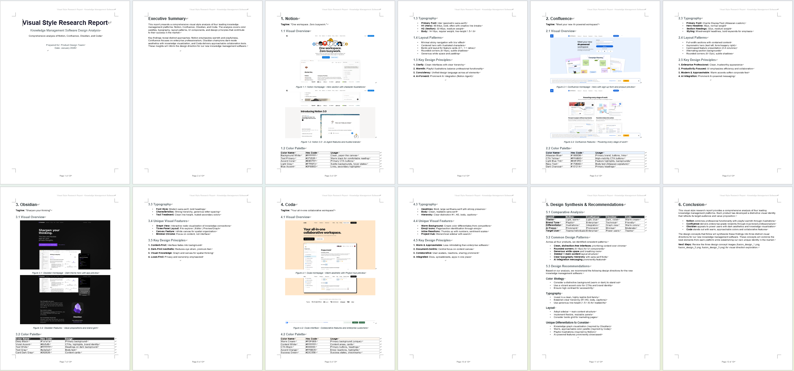

UI Design Research
Research Notion/Confluence design patterns and generate concept design mockups
Task
I'm a product designer planning a knowledge management software. Research products like Notion and Confluence, then create a visual design style report (report.docx) with screenshots. Based on the analysis, generate three design concept images (fusion_design_1/2/3.png) that synthesize their design characteristics.
Results

Three AI-generated UI concept designs that synthesize design patterns from Notion and Confluence. Each concept demonstrates a unique visual direction: minimalist block-based editing (Notion-inspired), structured hierarchical navigation (Confluence-inspired), and a balanced fusion approach. The designs showcase consistent typography, color systems, and component layouts suitable for knowledge management software.

The generated design style report in Word format (.docx). It contains: competitive analysis of Notion and Confluence UI patterns, captured screenshots of key interface elements, color palette extraction, typography analysis, spacing and layout grid systems, and actionable design recommendations for building a new knowledge management product.
Skill Workflow (DAG)

Skills automatically selected and orchestrated by AgentSkillOS